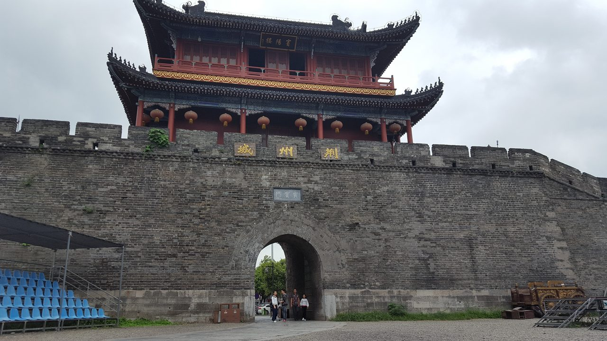
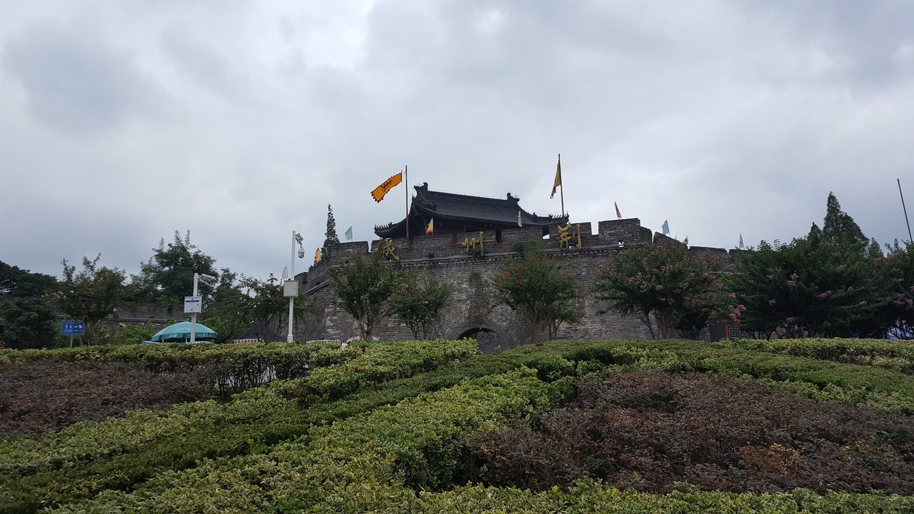
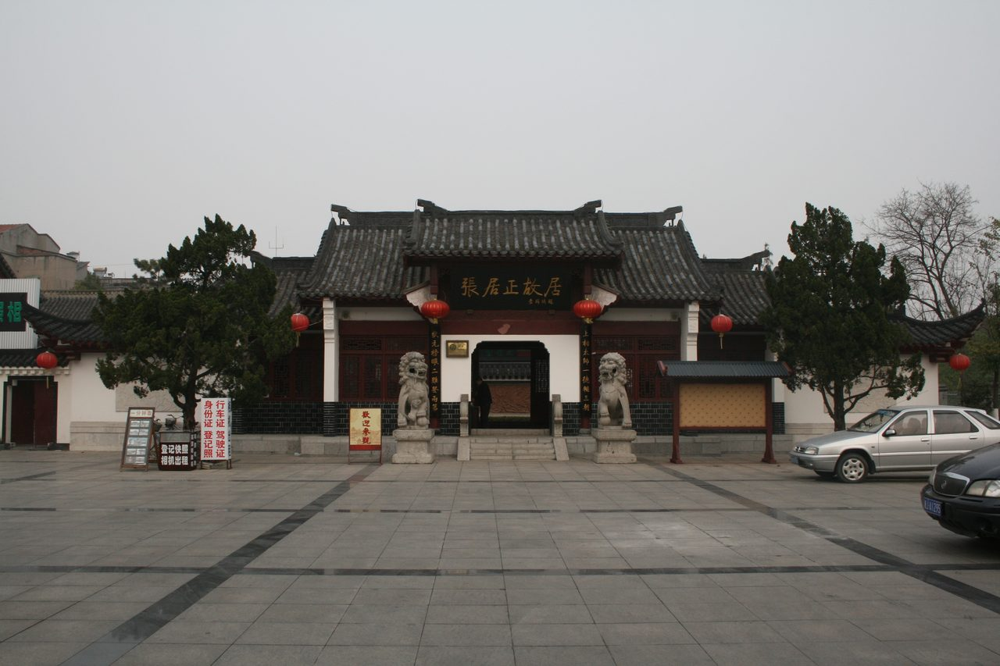
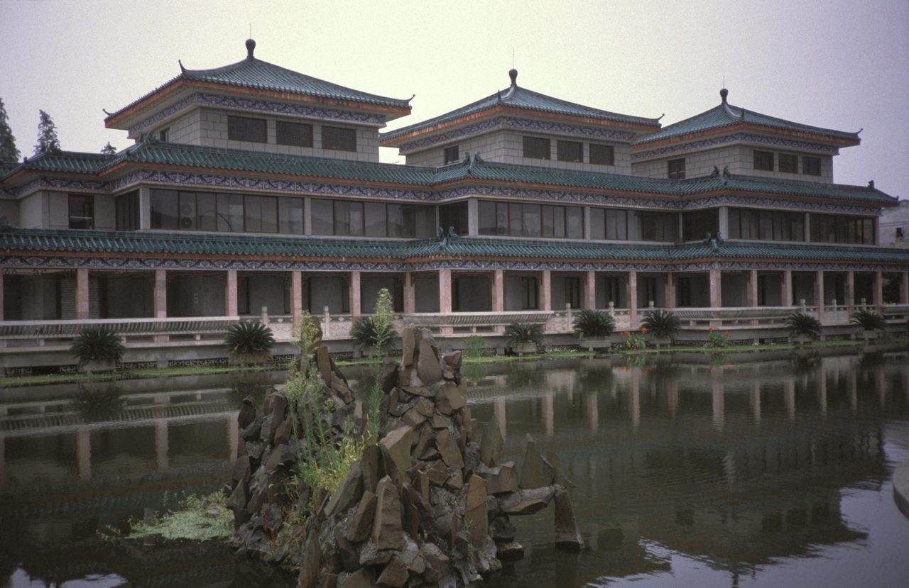
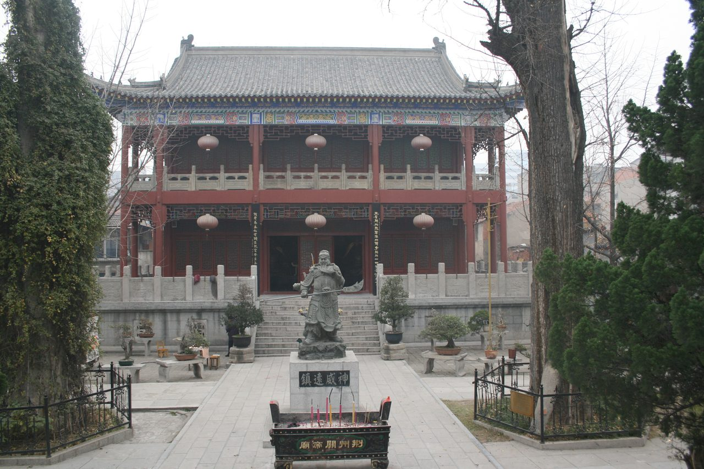
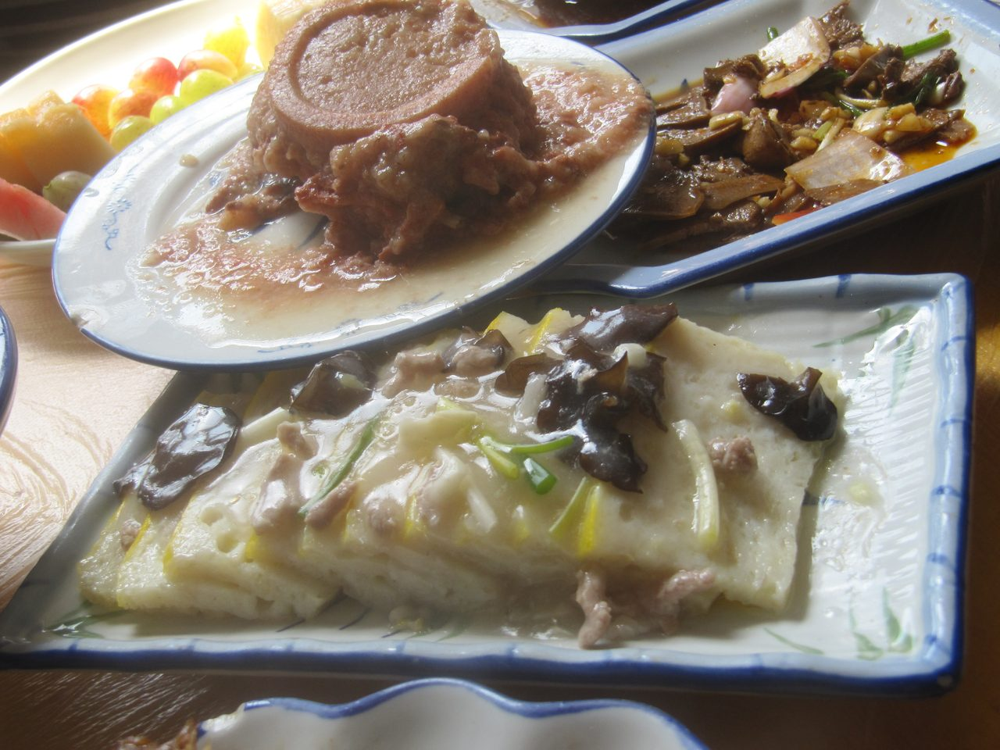

10:00–11:05必做 · 65分钟
宾阳楼，屋檐下合影
有开城或巡游，最多看到 10:15，然后登楼。没有仪式就 10:00 直接上，多出的 15 分钟留给午饭或堵车，不要再加景点。
城墙只走东门这一小段。合影 5 分钟，指定 1 个人拍。下雨城砖滑，长者留在城楼里，上下台阶要扶。
10月3日 · 周六 · 国庆
16人 · 8位长者 · 3台车
今晚做完，明天不用再临时找人。
免票、半价、进博物馆全靠它。先数清 70 岁以上有几位，在群里回复「身份证已带」。
告诉店家 11:50–12:10 到。订两桌 8 人，不要一桌坐 16 人。鱼糕、扣肉、藕汤为主，慢工菜最多一道。
全员穿防滑鞋。长者带常备药。城砖和石板遇水很滑。
荆州博物馆 9 月 21 日公告：国庆 10 月 1–7 日开放 8:30–18:30（18:00 停止入馆）。个人参观免预约，刷身份证或支付宝扫码入馆。亲友自驾按个人进，不必今晚在公众号抢票。
入口若把 16 人当成旅行社团队，再打 0716-8494574。公告原文见 博物馆假期开放公告。
能打伞、台阶只是湿：按下面主行程，先登宾阳楼。已经中雨、台阶积水：三台车直接去博物馆，点底部「雨天」。9:25 由一位总协调在群里发一句，三台车同一种走法。

16 人里有 8 位长者，还要挪 3 台车，国庆路上比平时慢。
下面 8 段是重排后的时间。全天就这 4 个点：宾阳楼、张居正故居、午餐、博物馆。关帝庙超时就整段取消。
导航统一搜「荆州古城金凤广场」。三台车停一起，认准「免费停车」标识。16 人到齐再走，不要先到的人先进城。
有开城或巡游，最多看到 10:15，然后登楼。没有仪式就 10:00 直接上，多出的 15 分钟留给午饭或堵车，不要再加景点。
城墙只走东门这一小段。合影 5 分钟，指定 1 个人拍。下雨城砖滑，长者留在城楼里，上下台阶要扶。
沿张居正街走，大约 15 分钟，街上有屋檐。故居里大约 45 分钟，回廊能避雨，有地方坐。走不动的人在前院歇，不必走完。
就在张居正街吃，上午的车先不动。两桌上菜更快。13:25 结账走人，一个人去兑早堂面的话，不能让全团在店门口等。
导航「荆州博物馆」，跟第一辆车走。这段把堵车、停车、走到门口、刷身份证都算进去了。环城观光车只在宾阳楼和关帝庙停，到不了博物馆，不要等它。
刷身份证或支付宝进。按这个顺序看，看完再逛别的：西汉古尸、越王州勾剑、战国丝绸、虎座凤鸟悬鼓。石刻新展顺路看。15:35 门口集合，没看完也走。走之前上厕所。
开车约 20 分钟，庙里约 40 分钟，殿内不受雨影响。人累、雨大，或者博物馆已经超时，就取消。取消后在博物馆停车场休息，不再另找地方。
不去三义街，不回东门，不去大赛巷。17:15 前三台车点完名，17:30 发车。长者添一件外套。过长江大桥把速度放低。
宾阳楼、张居正故居、午饭都从这里步行，中途不挪车。
导航到金凤广场13:25 三车同时出发。到了先停车，再慢慢走到门口。
导航到博物馆只有去关帝庙才开这一段。不去的话，就从博物馆停车场直接返程。
导航到关帝庙每车 5–6 人，设 1 名车长点名。每次上车前在群里发定位。长者上下车有人扶，过马路走内侧。
大赛巷在沙市，离古城开车大约 20 分钟，不是东门旁边的小吃巷。傍晚绕过去，17:30 回不来。
三义街、护城河就在关帝庙附近，但 16 人再走一圈就会误发车。看见了也不要加。
画舫单程就要约 20 分钟，下雨体验差。不买 115 元含船的那一档。
三台车不要停进东门，直接开去博物馆。群里只发一句：「改雨天方案」。
城墙和石板湿了就滑。长者上下台阶，一扶、走慢、先看脚底。伞和雨衣都带，拍照时把伞交给旁边的人。风大的时候不在城楼边沿站。

上午 · 约 50 分钟
南方保存最完整的古城墙之一，周长 11 公里多。今天只上东门这一段。雨天长者留在城楼内。

上午 · 约 45 分钟
明代首辅张居正的宅子。两进院子加碑廊，是上午最适合慢慢走的一站。

下午 · 90 分钟 · 全天重点
先看古尸、越王州勾剑、战国丝绸、虎座凤鸟悬鼓。国庆有部分石刻第一次展出，顺路即可，不单独占时间。

傍晚 · 可整段取消
关羽镇守荆州的府邸旧址，在老南门内。请香随喜就好。时间不够就放弃，不要压缩博物馆来换它。

无刺，长者能吃。
约 28–48 元软，适合下饭。可以点。
约 38–58 元热汤暖身。两桌共用一份大汤。
按店里大份上菜慢。两桌最多共点一道。
约 48–68 元持 95 元环城套票，国庆期间或可兑一碗早堂面。派 1 个人去兑，全团不要排队。70 岁以上不要为了这碗面去买全价联票。公安锅盔、矮子馅饼有就顺手买，不专程去沙市大赛巷。
含宾阳楼、张居正故居、关帝庙和环城观光车，不含画舫。单买三张门票是 35+20+20=75 元。今天用不上观光车，不兑面的话，买单票每人省 20 元，8 人省 160 元。
窗口买半价。联票半价大约 48 元一位，以当天窗口为准。70 岁以上仍是免票，不要跟着买联票。
年龄混着，总价就在上面两组之间。停车按国庆免费政策按 0 元估，认准免费标识。博物馆免费。10 月 1–7 日高速免费。油费、伴手礼另算。小吃不列入必花。
最近的大医院是荆州市中心医院。东西落在景区，先找游客中心。